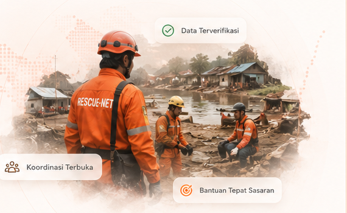

Loading bencana aktif...
Mengambil data dari API.
Open Disaster Coordination
Open Disaster Coordination & Relief Management System
Menghubungkan kebutuhan, bantuan, relawan, transportasi, logistik, posko medis, dan bukti lapangan terverifikasi dalam satu sistem terbuka untuk respons bencana yang cepat, transparan, dan kolaboratif.

Data kejadian aktif dari Rescue-Net API.
Mengambil data dari API.
Pilih jalur operasi yang paling sesuai dengan kontribusi Anda.